本科学历 | 6年工作经验
前资深 UI 设计师，负责过多端产品界面及百万人级用户体验升级。
这让我更深刻理解了“用户视角”。
多年的设计经验赋予了我极其敏锐的视觉审美能力。在AI时代，我将这种对“像素级”细节的把控力，转化为对镜头语言与叙事节奏的精准掌控。
我不仅懂如何生成精美的画面，更懂得如何用画面讲故事。
利用AI打破传统物理拍摄的限制，让天马行空的商业创意与剧本概念高质量、高效率地落地。
能够分析剧本类型、角色关系、情绪曲线及剧情节奏，完成AI短剧内容结构设计。
能够将剧本拆解为镜头语言，完成景别、机位、运镜及画面节奏设计。
能够完成角色设定、三视图制作、服装设计、表情库搭建及多镜头人物一致性管理。
能够完成场景搭建、光影设计、色彩体系规划及影视级氛围塑造。
能够完成剧情道具、品牌产品、商业展示物料及标准化资产库制作。
能够完成产品卖点提炼、广告脚本设计、营销创意包装及转化逻辑规划。
能够完成商品主图、详情页视觉、广告海报、产品故事板及带货视频素材设计。
能够完成AI真人短剧、商业广告、产品展示视频及角色动态表演生成。
能够完成剪辑调色、配音配乐、字幕包装、特效制作及成片输出优化。
项目题材涉及专业橄榄球运动，而本人前期缺乏相关背景知识，对赛制规则、场地标识、战术体系及球员训练细节了解有限。在AI视频生成过程中，经常出现球员跑位错误、动作不符合运动规律、多角色运动轨迹混乱以及攻防逻辑失真的问题。尤其在多人对抗镜头中，AI容易产生人物乱跑、位置穿插错误和战术执行混乱等现象，严重影响画面真实性与专业度。
首先系统学习橄榄球专业知识，大量观看NFL比赛录像、“超级碗”赛事直播、训练纪录片以及经典体育电影《面对巨人》等内容，深入理解球员职责分工、战术路线、场地规则及真实比赛节奏。
在制作阶段，针对复杂比赛场景建立精细化分镜体系，通过详细的战术草图和分镜图提前规划每位球员的起始站位、移动路径、攻防关系及镜头调度逻辑。同时持续优化提示词结构，将人物身份、动作目标、运动方向、速度变化和空间关系进行明确约束，并对关键镜头进行定向修正，从而有效控制多人运动场景的稳定性和真实性。
成功实现橄榄球比赛与训练场景的高质量还原，显著降低了人物乱跑、动作失真及战术逻辑错误等问题。最终生成的比赛画面在球员跑位、攻防节奏 and 动作真实性方面均达到较高完成度，能够较好地呈现专业橄榄球运动的竞技氛围与视觉冲击力。
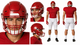
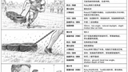
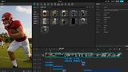
校园群像戏涉及大量角色同时出镜，且存在多个学生小团体之间的对话与正反打镜头。AI在生成过程中容易出现角色身份漂移、人物位置错乱、背景人物随机移动等问题，导致镜头连续性被破坏。
在前期分镜设计阶段，对所有角色进行编号管理并固定站位关系，为每个角色建立明确的位置锚点。通过分镜图预先规划人物视线方向、对话顺序及镜头切换逻辑，在提示词中增加人物位置约束与身份锁定描述。同时采用分镜拆分生成方式，将复杂多人场景拆解为多个可控镜头单元逐步生成，再进行后期剪辑拼接。
成功实现多人校园群像场景的稳定输出，有效避免角色乱跑和身份错位问题，保证了人物关系与镜头叙事的连续性。
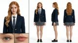
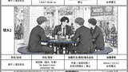
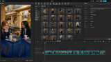
项目中涉及产品展示镜头，AI生成时容易出现包装文字乱码、品牌Logo变形、瓶身结构扭曲等问题，尤其在人物与产品同时出现的镜头中，产品细节一致性难以保证，影响商业广告的专业呈现效果。
采用“剧情镜头”与“产品镜头”分离制作策略。人物剧情部分重点保证表演与情绪表达，产品展示部分则采用独立生成与精修流程，后期对包装细节进行逐帧优化，同时建立产品标准参考图，确保不同镜头下产品外观的一致性。
显著提升产品展示镜头的品牌还原度与商业质感，有效解决AI生成中的文字错误和包装变形问题，满足品牌方展示需求。
项目包含大量古装动作戏与打斗镜头。AI在生成过程中容易出现肢体穿模、兵器穿帮、动作衔接不自然以及受力逻辑错误等问题，影响战斗场面的真实感与观赏性。
针对不同武打动作建立动作分解式提示词，将复杂连续动作拆分为多个关键动作节点进行生成。通过增加角色重心变化、身体朝向、武器运动轨迹及镜头运动描述，提高动作逻辑的准确性。
有效提升打斗镜头的动作流畅度与真实感，减少肢体穿帮现象，使战斗场面更具视觉冲击力。
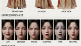
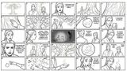
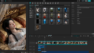
作为年代题材作品，AI对特定历史时期的服装风格、建筑特征、道具细节及社会环境缺乏准确认知，容易生成现代元素混入历史场景的情况。此外，角色在场景中调度复杂，人物走位与镜头衔接控制难度较高。
前期广泛收集历史照片、纪录片及影视资料，建立完整的年代视觉参考库，为AI提供统一的时代审美基准。在制作过程中，通过参考图垫图、风格锁定及场景资产统一管理，确保整体视觉风格一致。同时采用连环画式分镜设计，对角色站位、运动路径和镜头运动进行精细规划，实现复杂场景下的人物调度控制。
成功构建符合时代背景的视觉体系，避免现代元素穿帮问题，并在复杂场景中保持良好的叙事连贯性和画面秩序感。
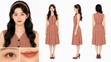
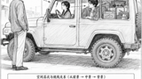
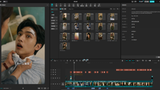
支持横竖屏全通路多维度适配传播（16:9 横屏 & 9:16 竖屏矩阵）
剧本分析 / 角色图 / 场景图 / 分镜图 / 关键帧生成
角色图 / 场景图
视频生成
角色图 / 场景图 / 分镜图 / 视频生成
剪辑 / 音乐 / 字幕
画面修正与视觉优化
分析剧本类型、世界观设定、角色关系、剧情结构及核心情绪曲线
确定摄影风格、灯光风格、色彩体系及项目统一风格提示词
完成人物三视图、服装设定、表情库、动作库及角色一致性规范
完成人物音色、语速、语气及情绪表达体系设计
完成场景布局、光影氛围、色调风格及空间设定设计
完成核心剧情道具、常规道具及特殊道具资产设计
提交人物、声音、场景及道具资产供甲方审核确认并锁定版本
拆解剧本镜头语言，明确景别、机位、运镜、动作、情绪及画面节点
依据设定生成高一致性分镜画面，验证构图与镜头表达
根据分镜及镜头提示词生成视频素材，保证角色、场景及动作一致性
完成剪辑、配音、音效、配乐、字幕包装及节奏优化
完成质检优化、终版输出、项目归档及交付